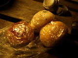

おにぎりの具 四天王

旅のお供として僕が必ず持っていくのが「おにぎり」です。
時間の無いときや、両手が使えないような場所でもサッと食べられます。
おにぎりにもたくさんの種類があって、それぞれよさがあるので毎回何の具を選ぶかで、かなり迷ってしまう僕であります。それに、旅先で購入するおにぎりにも個性があるんですよねえ。本当、ランキングをつけるとなると困ってしまいます。
が！あえて四天王を選べと言われたら、次の４つでしょうか。
- ネギ味噌おにぎり
- ゴマ鮭ちりめんおにぎり
- 紀州梅しそおにぎり
- 高菜めんたいおにぎり
好きな順番は、次の通りです。
- 高菜めんたいおにぎり
- ネギ味噌おにぎり
- 紀州梅しそおにぎり
- ゴマ鮭ちりめんおにぎり
それぞれの具へのこだわり
- 高菜めんたいおにぎり
- 高菜をごま油で炒めたもので大ぶりの明太子を包んだものが最高でございます。
- ネギ味噌おにぎり
- お義母さんが作った自家製のお味噌にネギを練りこんだやつじゃなきゃ！
- 紀州梅しそおにぎり
- 親戚のおばちゃんが送ってくれる3年物の梅干しに限ります、はい。
- ゴマ鮭ちりめんおにぎり
- 秋鮭の季節がはじまったら、必ず作るおにぎりです。贅沢にイクラを入れてもグッド。